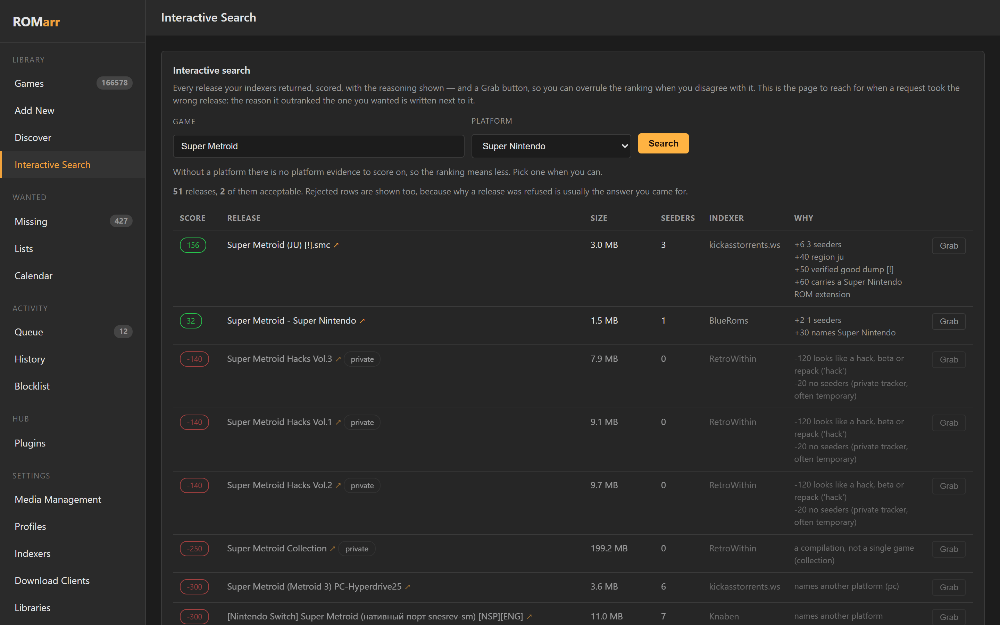

01 DISCOVER
ROM Hub
Open-source plugins bring in sources, metadata, tools, and more.
Browse the plugin projectsTHE GAME LIBRARY WORKBENCH MW / 01
ROMarr handles the part before the shelf: search the sources you choose, check a release against the DATs you trust, then put it where your setup expects it.
Made for the people who care where every file lands.

A SMALL OPINION, BUILT INTO THE PRODUCT
Keep a plain folder, pick a web library, use a desktop launcher, or mix the pieces that suit you. ROMarr and the tools around it are here to make that setup feel more like yours.
A HAND-BUILT MAP OF THE HANDOFFS
These projects can work together without turning into one locked-in stack. Start wherever you are; connect more when it helps.
01 DISCOVER
Open-source plugins bring in sources, metadata, tools, and more.
Browse the plugin projects02 FIND & VERIFY
Compare releases, understand the match, and choose what to import.
See the project03 MAKE IT HOME
Keep a folder, or choose RomM, Gaseous, Retrom, and other fits.
Compare library options04 PICK IT UP
Bring your collection to Cartridge, Playnite, LaunchBox, or your favorite player.
Meet the clientsYarr.It can sit at the front of the wider self-hosted setup, with ROMarr and the rest of your services connected on your terms.
How Yarr.It fitsTHE LIBRARY IS YOURS TO CHOOSE
ROMarr runs with a folder on its own or connects to supported libraries. Cartridge supports a range of library and launcher setups, so pick the client that fits your screens.
YOUR PLAYER, YOUR WAY
Cartridge supports RomM, Gaseous, Retrom, Playnite, and LaunchBox. Keep the client that feels right for your screens and controller.
ROMarr's library destinations and Cartridge's client support evolve independently. Check each project's current setup notes before choosing a route.
ROM HUB · A GROWING PLUGIN WORKBENCH
ROM Hub is the plugin engine behind ROMarr. Explore the projects made here, then build a small Python plugin for a source you want to add.
ROM Hub plugins are small Python packages described in a manifest.toml. You can publish a catalog for your own sources or make a plugin anyone can install.
rom-hub catalog add my-catalog https://example.com/catalog.jsonBuild a plugin in five minutes Read the plugin guide The catalog is the source of truth for what is currently published and installable. Plugin projects may be in different stages.
THE REST OF YOUR HOME SERVER
Move Weight's self-hosting guide covers the practical foundations. For media libraries and request workflows, these are some of the familiar tools people run alongside their own services.
Read the self-hosting guideA SHARED NORTH STAR
ROMarr, ROM Hub, Cartridge, and Yarr.It are being shaped to work in unison: discovery, careful imports, flexible libraries, and a front door that makes the whole setup easier to reach.
Grow ROM Hub sources and keep ROMarr's match context clear.
Connect the parts people already use without forcing one library or launcher.
Cartridge and Yarr.It help make a self-hosted collection feel easy to reach.
The projects keep their own maintainers and release schedules. RomM, Gaseous, Retrom, Playnite, and LaunchBox remain independent choices the ecosystem can meet where supported; nobody has to adopt the whole map.
START WITH THE PIECE YOU NEED
See what ROMarr can do, browse the ROM Hub projects, or get a steady self-hosted foundation from the Move Weight guide.